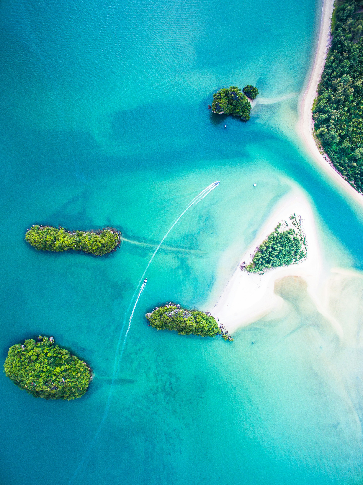
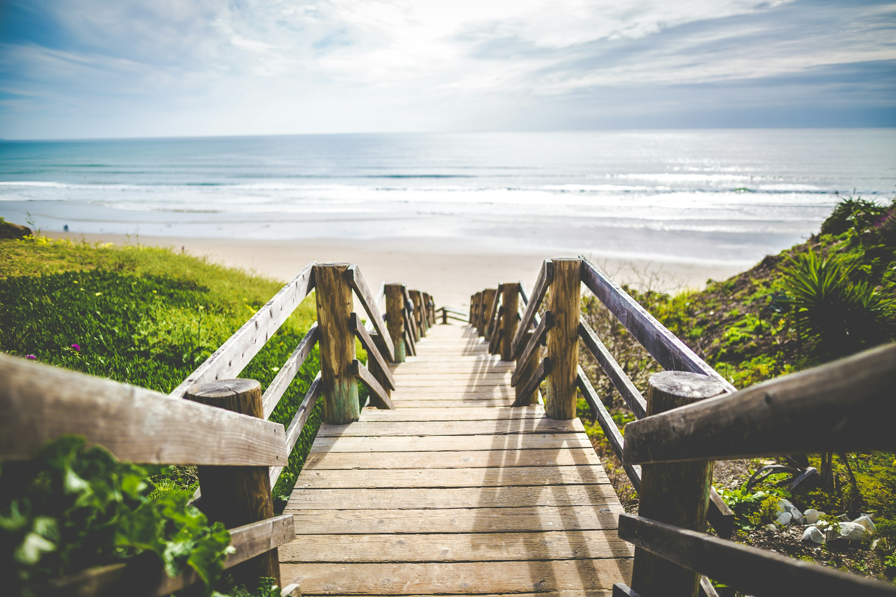
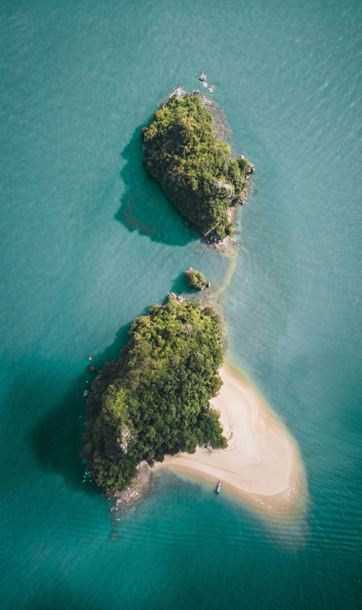

Destinasi Wisata Derawan
7 surga tersembunyi yang menunggu untuk dijelajahi — masing-masing dengan keajaiban alam yang tak tertandingi.
7 surga tersembunyi yang menunggu untuk dijelajahi — masing-masing dengan keajaiban alam yang tak tertandingi.
Surga Penyu Hijau Raksasa
Pulau Derawan adalah jantung dari Kepulauan Derawan — tempat di mana penyu hijau raksasa berenang bebas di sekitar dermaga kayu. Airnya sejernih kristal dengan visibilitas hingga 20 meter, menjadikannya salah satu spot snorkeling terbaik di Indonesia.
Di sini, snorkeling bukan sekadar olahraga — ini ritual pagi hari bersama penyu-penyu jinak yang sudah terbiasa hidup berdampingan dengan manusia. Sore hari, matahari tenggelam di balik cakrawala menciptakan lukisan langit yang memukau.

Rumah Ratusan Manta Ray
Sangalaki adalah salah satu lokasi terbaik di dunia untuk melihat Manta Ray secara konsisten. Ratusan manta ray dengan bentang sayap hingga 4 meter berputar anggun di Manta Point — sebuah cleaning station alami tempat mereka membersihkan parasit.
Selain manta, Sangalaki adalah salah satu dari sedikit pulau di dunia di mana penyu laut bersarang setiap malam. Program konservasi aktif melindungi habitat bertelur ini.

Danau Ubur-Ubur Tanpa Sengat
Kakaban menyimpan salah satu keajaiban terlangka di Bumi: danau purba berusia jutaan tahun yang terperangkap di tengah pulau, berisi ribuan ubur-ubur yang telah kehilangan kemampuan menyengat karena tidak memiliki predator alami.
Hanya ada dua danau seperti ini di dunia — Kakaban dan Pulau Palau. Berenang dikelilingi ribuan ubur-ubur yang lembut menyentuh kulit Anda adalah pengalaman yang benar-benar lain dunia.

Atol Tersembunyi Borneo
Maratua adalah atol berbentuk tapal kuda — salah satu yang terbesar dan terindah di Indonesia. Laguna birunya yang tersembunyi di dalam atol berwarna turquoise memukau dari udara maupun dari permukaan laut.
Dikenal sebagai salah satu spot diving terbaik di dunia, perairan Maratua menawarkan visibility luar biasa, arus yang penuh adrenalin, dan kehidupan laut yang tidak tertandingi — termasuk barracuda tornado, schooling jackfish, dan manta ray.

Pulau Terpencil Eksotis
Manimbora adalah salah satu pulau kecil tak berpenghuni yang masih sangat alami di Kepulauan Derawan. Pantai putihnya yang panjang tanpa jejak kaki, pohon kelapa yang menjulang, dan air biru jernih menjadikannya surga bagi mereka yang ingin ketenangan absolut.

Danau Dua Rasa yang Memukau
Labuan Cermin adalah fenomena alam yang menakjubkan: sebuah danau yang memiliki dua lapisan air berbeda. Di permukaan mengalir air tawar, sementara di bagian bawah terdapat air asin dari laut. Kejernihan sempurnanya menciptakan efek cermin yang mengagumkan.
Visibilitas ke dasar danau yang sangat jernih membuat Anda seolah mengapung di udara. Ikan-ikan kecil berenang bebas di sekitar Anda, sementara mangrove hijau mengelilingi tepi danau menciptakan suasana yang magis.

Berenang Bersama Ikan Terbesar di Bumi
Whale Shark Point di perairan Berau adalah salah satu lokasi terbaik dan paling konsisten di dunia untuk melihat dan berenang bersama hiu paus (Rhincodon typus) — ikan terbesar di planet ini yang bisa mencapai panjang 12 meter dan bersifat sepenuhnya jinak.
Berenang berdampingan dengan makhluk raksasa yang perlahan melayang di antara Anda adalah momen yang akan mengubah perspektif Anda tentang alam. Ini bukan pengalaman di akuarium — ini alam liar yang sesungguhnya.